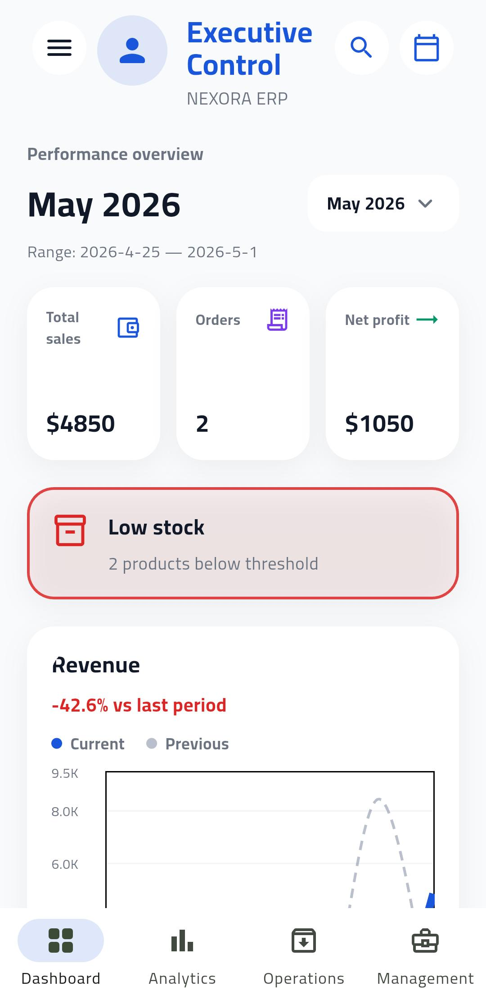
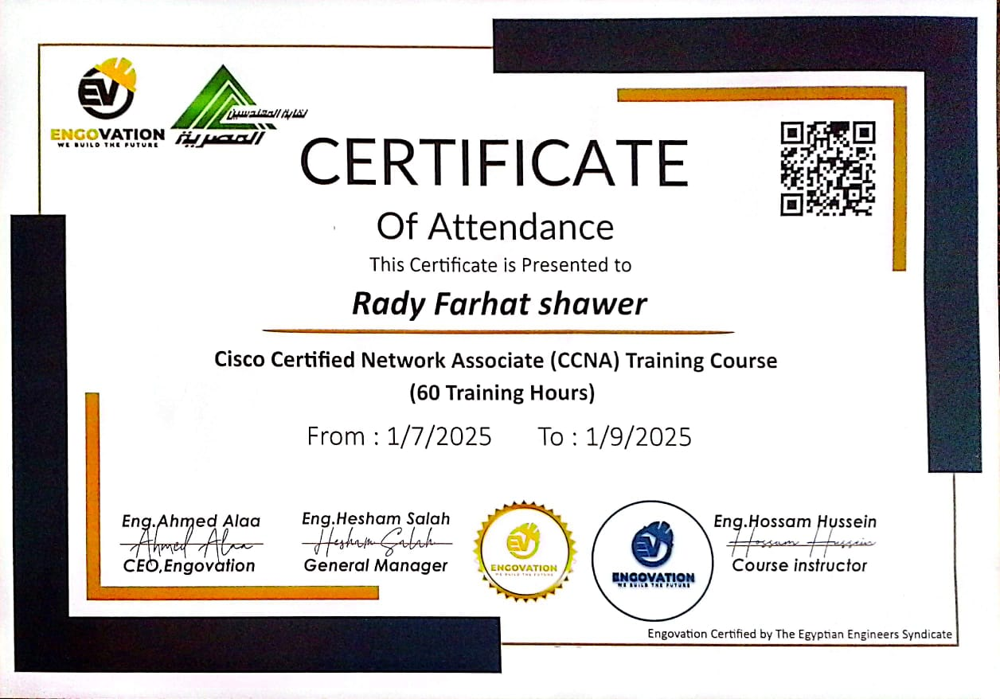
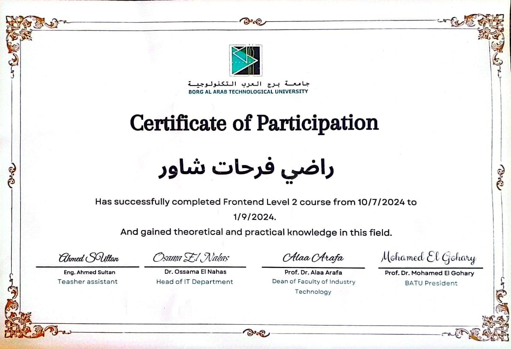

System access granted. Welcome,
_
Network Engineering Student | Aspiring Cybersecurity Specialist
Passionate about networking, cybersecurity, and building secure systems.
01. About Me
I am a Network Engineering student from Beheira, Egypt, currently building my career toward becoming a Cybersecurity Specialist.
I am deeply invested in studying CCNA and Network+ concepts, building a strong foundation in routing, switching, and network architectures.
My primary interest lies in Cybersecurity and penetration testing fundamentals. I enjoy learning how systems can be exploited and, more importantly, how to secure them.
Additionally, I have basic experience in Software Development, particularly in Java, developing client-server applications and exploring OOP concepts.
02. Skills Archive
Networking
Cybersecurity
Programming
Tools
03. Real Networking Projects

NEXORA Mobile Application
A cross-platform mobile application built using Flutter, focusing on clean UI/UX design and smooth navigation. The app includes multiple screens and demonstrates practical knowledge of mobile app development and responsive layouts.
Network Design & Subnetting Lab
Designed and configured a small network topology using subnetting techniques
to efficiently allocate IP addresses and improve network
segmentation.
Outcome: Improved understanding of IP addressing, network
design, and routing fundamentals.
Routing & Switching Practice Lab
Configured routing and switching in a simulated network environment to
enable communication between multiple network segments.
Outcome: Gained
hands-on experience in network traffic flow and inter-network communication.
Network Security Lab
A dedicated environment for practicing network security implementations, firewalls, and securing router/switch configurations.
Penetration Testing Practice
A localized virtual environment designed for practicing ethical hacking, vulnerability assessment, and exploit techniques.
04. Experience Log
Freelance Learning Projects
Building hands-on labs and participating in self-directed studies focused on network engineering and foundational cybersecurity.
University Projects
Collaborating with peers on academic projects related to computer networking, client-server architectures, and software engineering.
Personal Projects
Developing individual applications like Java-based socket programming and networking simulations to bridge theory and practice.
05. Certifications

CCNA Training Course (60 Hours)
ENCOVATION Academy
Jul 2025 – Sep 2025
Covered networking fundamentals, TCP/IP, subnetting, routing, and switching basics with hands-on lab experience.

Frontend Level 2 Course
Borg Al Arab Technological University
Jul 2024 – Sep 2024
Successfully completed Frontend Level 2 course, gaining theoretical and practical knowledge in web development.
06. Establish Connection
My inbox is always open. Whether you have a question, an internship opportunity, or just want to say hi, I'll try my best to get back to you!